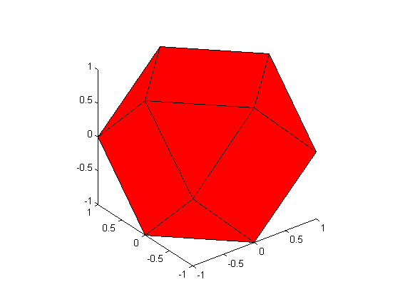

Contents
function demoTriangulateFaces(varargin)
%TRIANGULATEFACESDEMO Demonstrate how to transform a generic to a trimesh % output = demoTriangulateFaces(input) % % Example % demoTriangulateFaces % % See also % % % ------ % Author: David Legland % e-mail: david.legland@nantes.inra.fr % Created: 2008-10-16, using Matlab 7.4.0.287 (R2007a) % Copyright 2008 INRA - BIA PV Nantes - MIAJ Jouy-en-Josas.
Original polyhedron
% create a polyhedron with various face vertex numbers [n e f] = createCubeOctahedron; %#ok<ASGLU> % display the polyhedron figure(1); clf; drawPolyhedron(n, f); % graphical settings view(3); axis equal;
Compute triangulation
% Computation of triangulated mesh tri = triangulateFaces(f); % display new mesh figure(2); clf; patch('vertices', n, 'faces', tri, 'facecolor', 'r'); % graphical settings view(3); axis equal;